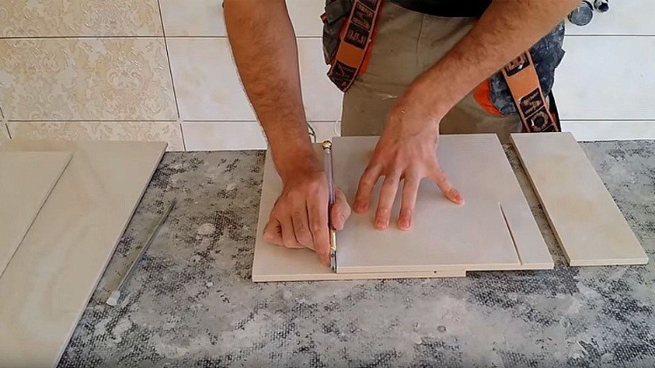
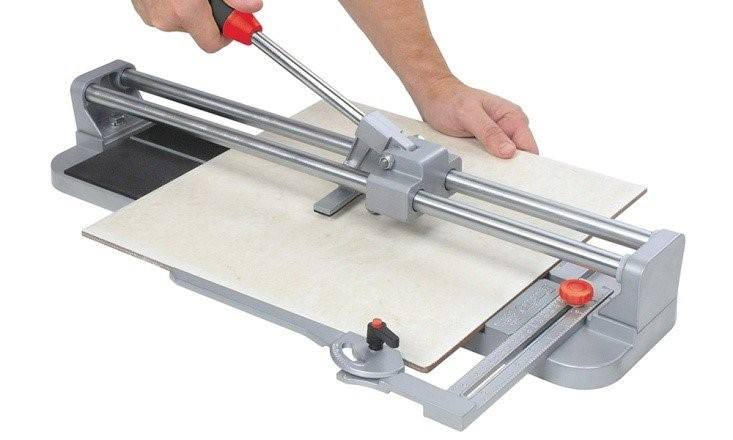
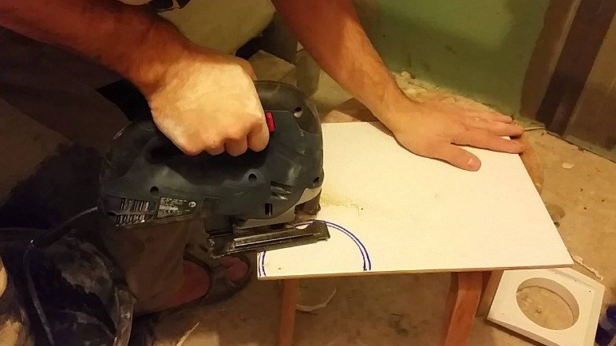

-

8(0152)31-25-61
-

kst@ggkst.by
-

http://ggkst.by
8(0152)31-25-61
kst@ggkst.by
http://ggkst.by
Резка плитки
Инструменты, применяемые в резке плиточной керамики и кафеля, можно условно разбить на две большие группы: ручные и электрические. Некоторые пластины прекрасно режутся обычным стеклорезом, для резки других изделий приходится применять специальное оборудование.
Применяемые инструменты
Среди всей целевой оснастки есть и специальные приспособления, предназначенные именно для резки плиток, и те, что используются в более широком диапазоне работ. Здесь применяются:
- Стеклорезы;
- Ручные и электрические плиткорезы;
- Угловые шлифовальные машинки – УШМ (болгарки);
- Лобзики с алмазным напылением;
- Электрические лобзики;
- Специальные кусачки.
Стеклорез
Стеклорезом можно раскроить только тонкий настенный кафель. Напольный материал и толстый керамогранит им разрезать не получится. Для работы подойдут и алмазные, и роликовые, и масляные стеклорезы. Разрез нужно производить по заранее размеченной линии или по линейке. При правильном нажиме во время резки должен быть слышен характерный равномерный потрескивающий звук. Операцию следует производить одним точным плавным движением. На глазурованной поверхности материала остаётся отчётливо видимая царапина.

Надлом материала делается специальными клещами, на краю стола или над каким-нибудь длинным узким предметом округлого сечения, подложенным под линию разреза. Кромку реза следует обрабатывать наждачной бумагой или абразивным бруском.
Ручной плиткорез
Принцип резки схож с работой стеклореза. Только сам режущий наконечник тут находится не на рукоятке, а на специальной каретке, перемещающейся вдоль направляющих.
Усилие на инструмент передаётся через встроенный рычаг. В конце процесса нажатием на этот же рычаг производится и слом плитки по намеченной линии. В зависимости от конструкций и размеров приспособления, тут можно резать плитку разной толщины.

Электрический плиткорез
Инструмент представляет собой станок, работающий по принципу циркулярной пилы. Распилить тут можно не только кафель и керамогранит, но ещё и бетон, фарфор и природный камень.
На станке делается только прямолинейный рез, но зато здесь есть возможность произвести распил под любым углом наклона. В плане функциональности это самый лучший вариант для данной работы. Но его высокая цена может себя оправдать лишь при профессиональном использовании оборудования.
УШМ
Такой универсальный инструмент, как «болгарка» применяется и профессиональными плиточниками. Но тут нужно иметь навык работы с машинкой и соблюдать правила безопасности. Одно неловкое движение рукой или смещение плохо зафиксированной плитки может привести к серьёзным травмам не только самого работающего, но и окружающих его людей.
Для резки плиток лучше всего использовать диски с алмазным напылением диаметром 150-180мм. Существуют специальные насадки для УШМ – «слайдеры», многим людям они упрощают процесс работы, но использовать их необязательно. Обработка кромок производится теми же дисками, что применялись и при резке.
При распиле толстого керамогранита нужно выбирать круги, рассчитанные на влажную резку. Указанная на круге максимальная частота вращения должна быть не менее аналогичного показателя УШМ. Место резки необходимо постоянно увлажнять водой. Сухой распил быстро выведет диск из строя.
Надёжная фиксация плиток, произведённая с помощью струбцин, способствует не только безопасности, но и удобству работы. Так снижается вероятность порчи материала.
Электрический и ручной лобзик
Ещё одним универсальным инструментом является электролобзик. Для плиточных работ на него устанавливают специальные пилки для резки керамики. Но здесь нужно сразу отключить режим маятникового хода резки. Применять инструмент очень удобно в случаях, когда необходимо проделать какой-то криволинейный вырез. Для этих же целей используют и ручной лобзик с пилкой с алмазным напылением.

Кусачки
При формировании небольших выемок и срезании тонких кромок применяют кусачки для керамической плитки.
Сверление отверстий